Helping admins configure the settings behind financial services
Payactiv Core is the admin layer behind financial access — where the rules get set for the employee experience and the defaults companies configure for their workforce. I turned four disconnected settings stories into one navigation and page framework for it.

The settings here move real money
Payactiv Core isn't a settings page — it's the control layer for financial access. The configurations admins manage here decide what employees can access, when, and under which rules.
The platform does two jobs at once. It governs how the product works for end users — and it gives company admins the HR tech to configure Payactiv defaults for their own workforce. B2C and B2B2C, sharing one configuration logic.
Layer state-by-state regulatory requirements on top, and the stakes sharpen: a confused admin doesn't just get a clunky workflow. They can misconfigure a financial product. That's why orientation, inheritance, and permissions aren't polish here — they're the design problem.
The details are the design
Admin platforms are won in small moments. Three I paid attention to:
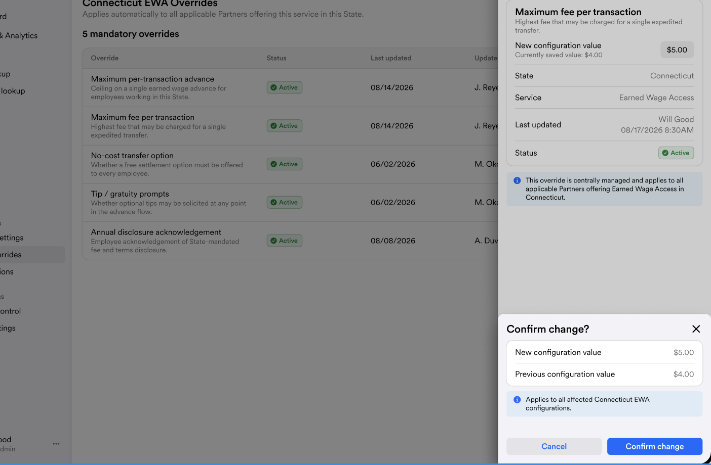


The problem behind the screens
I started with about four user stories around state requirements and business overrides. But mapping the surrounding experience, I realized those screens alone wouldn't solve the real problem — admins still needed to know where they were, whose configuration they were viewing, what applied at each level, and what they were allowed to change.
So I expanded the work from individual settings screens into a broader navigation and page framework for Core.
Understanding the system before designing the screens
Before touching interface design, I mapped how Payactiv defaults, state requirements, partner overrides, and permissions interact.
Through stakeholder conversations, requirements analysis, and competitive research on enterprise admin platforms, I identified what the experience needed to make clear.
That gave me four experience goals:
Mapping how configurations affect each other
I also needed to see how a setting at one level affects the levels below it.
A setting at a higher level overrides everything below it. That gave me a model for the settings experience — instead of treating each configuration as an isolated page.
Reframing the problem
I reframed it as: How can an administrator understand where they are, what they are configuring, and what actions are available across Core?
That changed the project from four individual screens into a systems design.
Organizing Core around what admins are trying to do
Before designing navigation, I mapped the broader admin feature set and explored two information architectures.
Entity-based
Organize features around objects in the system — partners, businesses, users, configurations. It mirrored the product structure, but admins had to know where an action belonged before they could find it.
- Partners
- Businesses
- Users
- Configurations
Support actions scatter across entities.
Intent-based
Organize features around what an administrator is trying to accomplish. The user's goal becomes the starting point, not the system's data model.
- Dashboard
- Support · new
- Operations
- Configurations
- System settings
One recognizable starting point for support specialists.
A new home for Support
That decision exposed a gap: no dedicated Support section. Instead of scattering support actions across entities, I proposed one recognizable starting point built around the support specialist's job.
- Dashboard
- Reports & Analytics
- SupportNew
- Operations
- Configurations
- System settings
Proposed IA — a dedicated Support section alongside the intent-based categories.
Matching the layout to the information
With the IA direction set, I explored how admins scan information as they move deeper into Core.
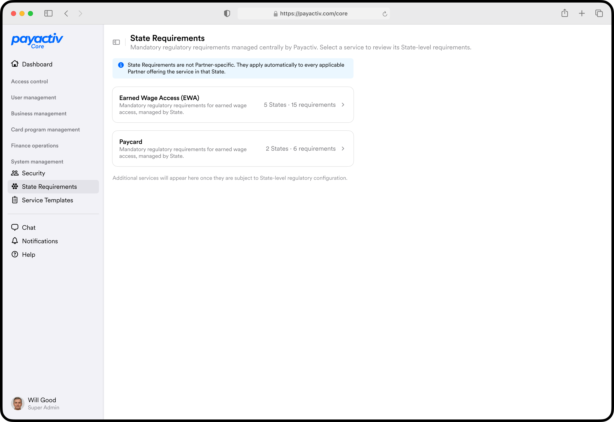
- Clearly separates each service.
- Keeps selection focused and easy to scan.
- Repeatable card pattern supports new services.
- Users must select a service before viewing its requirements.
- Less cross-service context at the entry point.
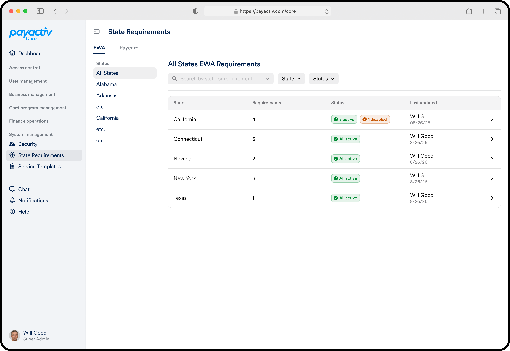
- Makes status and activity easy to compare across states.
- Surfaces areas needing attention fast.
- Adds another layer before users reach individual requirements.
- Optimized for comparison, not the primary selection task.
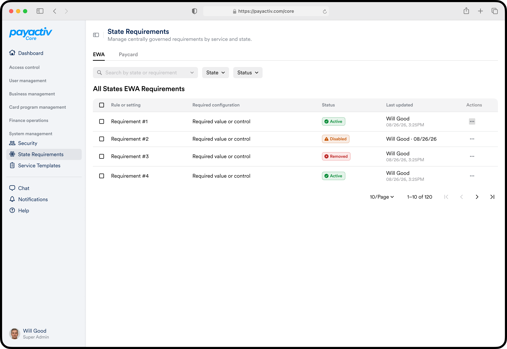
- Provides direct access to individual requirements.
- Built for scanning and repeated management.
- Introduces high information density too early.
- Blurs the line between services and their settings.
Keeping admins oriented as they move deeper
Global navigation can answer: What area of Core am I in?
But deeper workflows add levels — once an admin enters a partner, state, or configuration, global nav can't communicate their full location.
I added breadcrumbs to preserve that context: current position in the hierarchy, which entity is in scope, and a direct path back up.
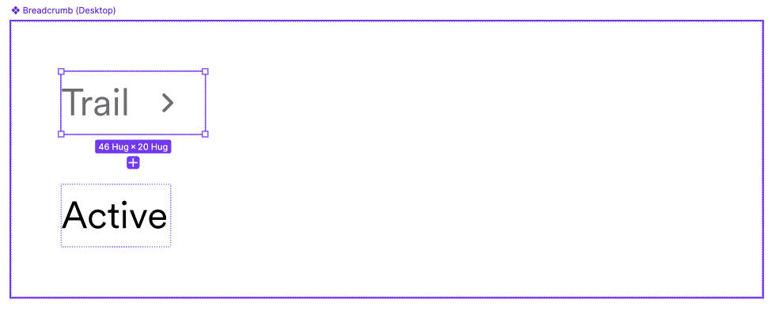
Turning four stories into one reusable framework
With the navigation model set, I applied it to state and partner settings.
An admin moves from a broad requirement into a specific partner context, sees which configuration applies, and takes only the actions their role permits.
Instead of one screen per requirement, I connected them through a single consistent page framework:
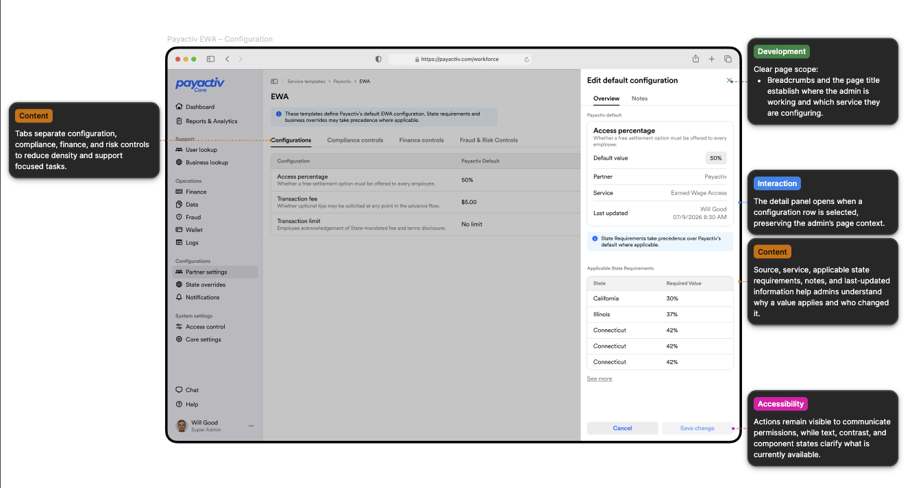
Designing for dense information
These pages are dense with policy and configuration — the interface had to support fast scanning without giving everything equal weight.
I used the design system's semantic type roles, plus spacing and grouping, to build hierarchy. Admins scan names and values first, then dig into supporting detail when needed.
Making permissions understandable without changing the product model
Role-based access wasn't just a backend constraint — it changed what admins could meaningfully do on the page.
I kept the IA identical for Global Admins and view-only admins, and changed only the available actions.
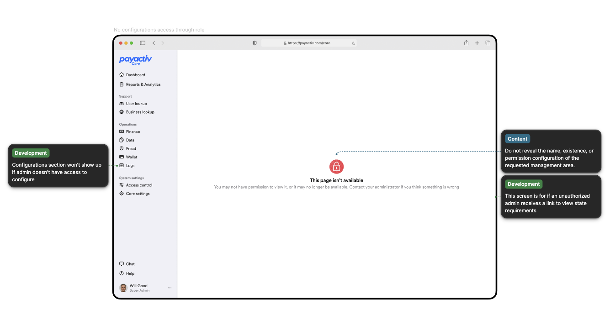
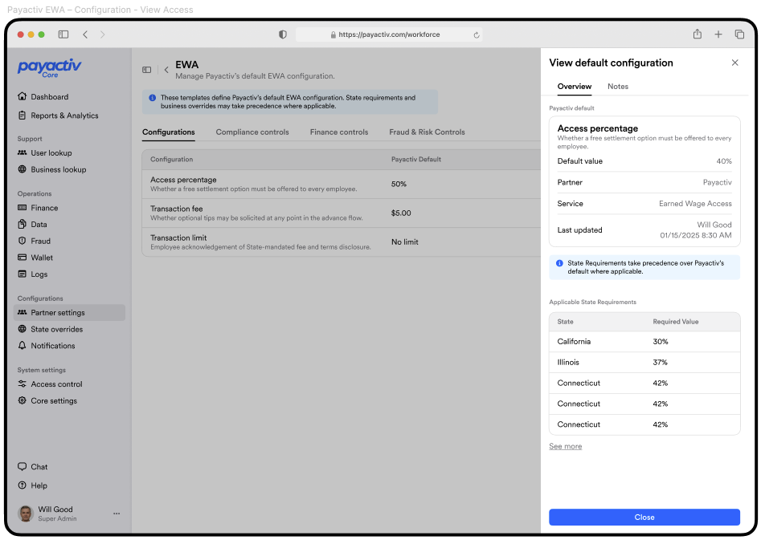
I also separated data failures from permission states, so one is never mistaken for the other.
Iterating within the design system
No lo-fi to hi-fi here — I worked directly in existing design-system components, exploring realistic layouts close to what could ship.
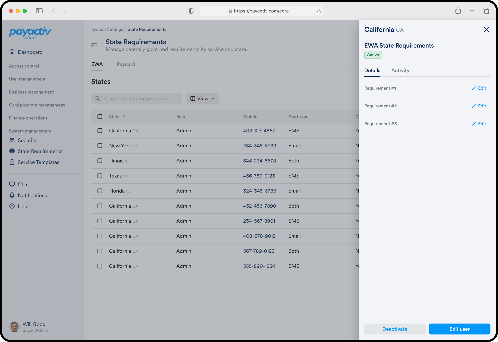
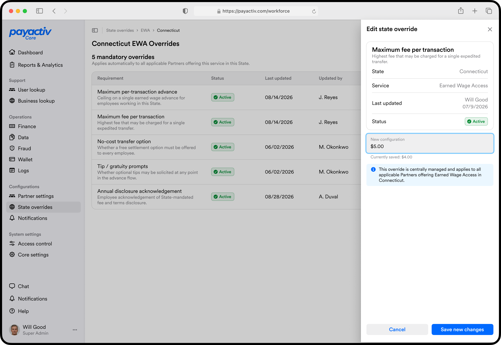
Through feedback I strengthened the title and scope, clarified guidance vs. actions, improved the scan path through tabs and tables, and tightened spacing so related information reads as a group.
The tradeoffs behind the interface
Using AI to learn and critique faster
This was an unfamiliar, systems-heavy domain — so I used AI as a learning and critique tool throughout.
Learning unfamiliar concepts
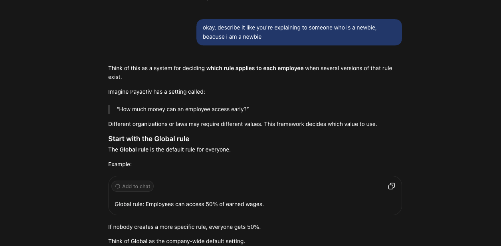
I had ChatGPT break down unfamiliar concepts as I hit them, building context while working inside a complex fintech system.
Pressure-testing my thinking
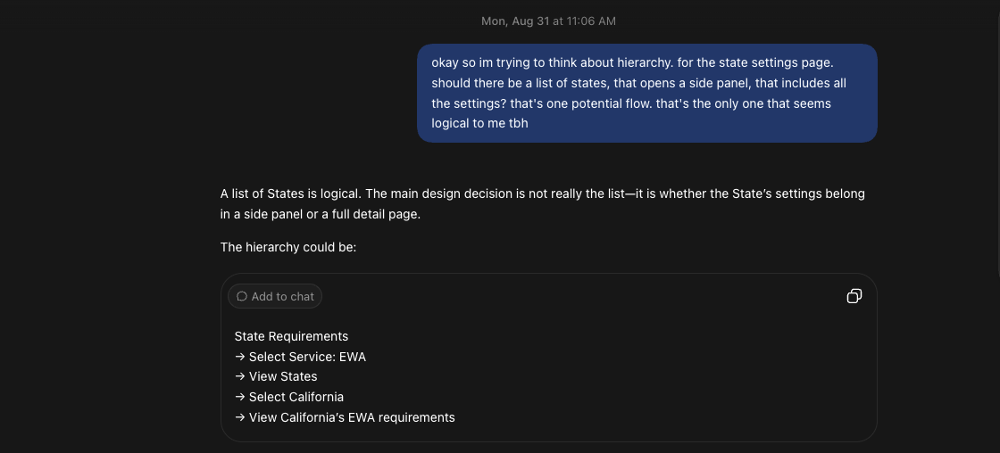
I also had it critique my work — surfacing questions and alternative directions to consider.
Designing with the people who use Core
The framework is set; the content is still evolving. I'm working directly with Core admins alongside the PM to uncover the settings logic behind their workflows — their expertise is shaping content and flow before formal usability testing.
What I'm planning for the next sprint
- 01Groom the current stories and designs for development.
- 02Review the implemented experience in QA.
- 03Usability-test with Core admins once the QA build is ready.
- 04Keep refining from admin, product, and engineering feedback.
Reflection
This project changed how I think about navigation in complex products. I started with four settings stories and learned the real design problem lived between them — IA, permissions, hierarchy, and interfaces all have to reinforce the same product model.
It also taught me to learn while designing — when I didn't understand the domain, I built the context I needed, brought questions back into the work, and kept refining with the people who know the system best.